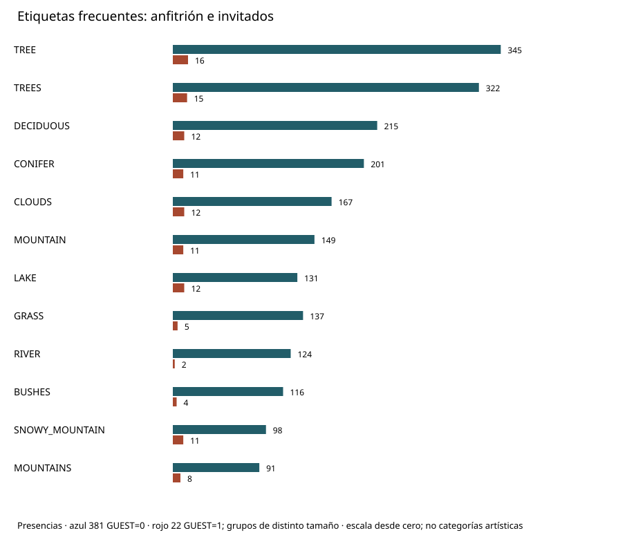
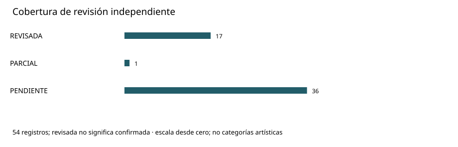

Brújula y auditoría retrospectiva
19-11-2026 · v01 · DRAFT · decisión PENDING
Resumen ejecutivo
El CSV auditado contiene 403 episodios, 67 indicadores y 3,221 marcas positivas. PERSON sí existe y hay dos títulos repetidos; tres filas tienen todas sus etiquetas en cero. Desde el paquete de entrada pasamos de afirmaciones recibidas a conteos, hashes y contradicciones documentadas. Aún no hay un insight sorprendente confirmado en este checkpoint de auditoría. Recomiendo priorizar secuencias, asociaciones y robustez de agrupamiento, conservando color como ruta bloqueada por permisos. Este paquete se preparó retrospectivamente al integrarse el nuevo protocolo HF: no acredita una decisión humana anterior a la ejecución. Las fuentes históricas siguen parcialmente pendientes y las etiquetas no validan por sí mismas el contenido de todas las versiones físicas.
Recomendación: Mantener tres rutas de CSV. No se registra aprobación humana.
Qué cambió
| Antes | Ahora | Impacto |
|---|---|---|
| Paquete de entrada | Paquete de entrada → auditoría y conciliación de 14 BR/10 H. | Decisión PENDING; cálculos no equivalen a aprobación |
Hallazgo y límite
Aún no hay un insight sorprendente confirmado en este checkpoint de auditoría.
Resultado descriptivo del snapshot/método; no inferir estilos, intención ni salud. Cifras y evidencia.
Gráficas de evidencia y sensibilidad
Etiquetas frecuentes: anfitrión e invitados

Cobertura de revisión independiente

Tabla alternativa y procedencia
{
"columns": [
"TREE",
"TREES",
"DECIDUOUS",
"CONIFER",
"CLOUDS",
"MOUNTAIN",
"LAKE",
"GRASS",
"RIVER",
"BUSHES",
"SNOWY_MOUNTAIN",
"MOUNTAINS"
],
"host_counts": [
345,
322,
215,
201,
167,
149,
131,
137,
124,
116,
98,
91
],
"guest_counts": [
16,
15,
12,
11,
12,
11,
12,
5,
2,
4,
11,
8
],
"review_coverage": {
"PENDIENTE": 36,
"REVISADA": 17,
"PARCIAL": 1
}
}
Cómo, por qué y para qué
CÓMO: CSV auditado y transformaciones declaradas, nulos condicionados, correcciones múltiples y controles; código en research/. POR QUÉ: los vacíos, prevalencias y representación producen patrones distintos. PARA QUÉ: escoger qué vale la pena comprobar y enseñar con incertidumbre.
Una pregunta para JC
¿Mantenemos como prioridad las tres rutas ejecutables de CSV y posponemos color hasta resolver permisos?
Opciones: Mantener tres rutas de CSV / Reorientar prioridades. Recomiendo Mantener tres rutas de CSV. Coste de continuar: CPU local y revisión; no se autoriza descarga de imágenes. Si se aplaza, se conservan resultados sin nueva promoción O2.
Respuesta: PENDING. Registro de feedback.
Evidencia y siguiente decisión
Continuar revisión de datos vacíos/algoritmos solo dentro del alcance autorizado. HF-02 sigue pendiente y el audiovisual bloqueado. Este paquete aún requiere QA visual a 360px/1280px y teclado.
Transición de protocolo PR17 · Informe científico · QA y límites · Metadatos del checkpoint · Generador.
SHA-256 del dataset: 42045c8b8aaa8296095d6b294927fb9d0f73a57259f59b560c375844c0fe01cf. Atribución: Walt Hickey/FiveThirtyEight, CC BY 4.0; gráficos propios derivados de etiquetas, sin pinturas ajenas. Versión v01: primera entrega de este hito, retrospectiva; no inventa versión aprobada previa.